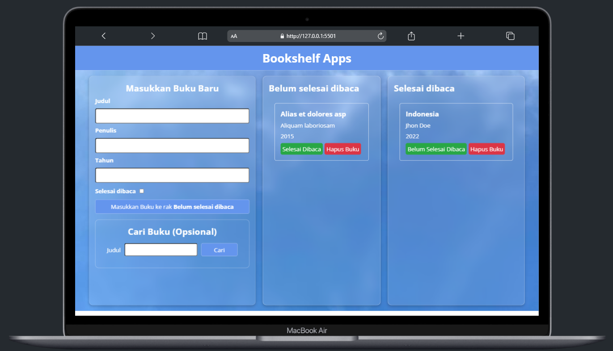
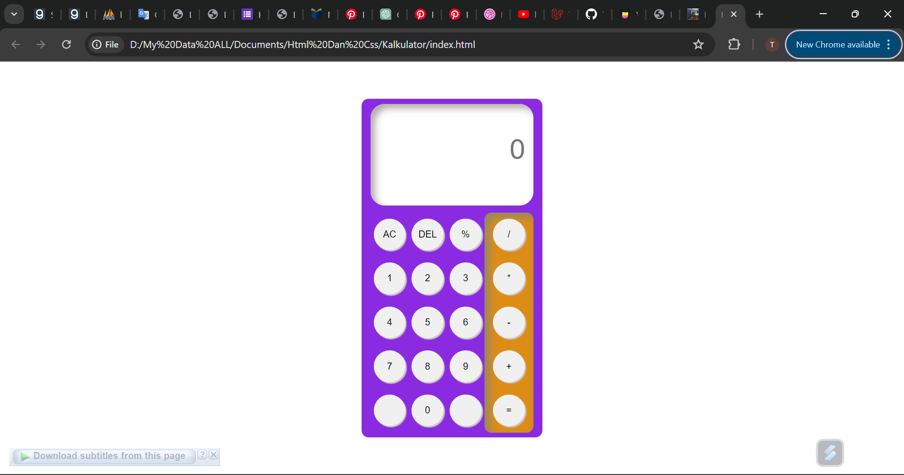
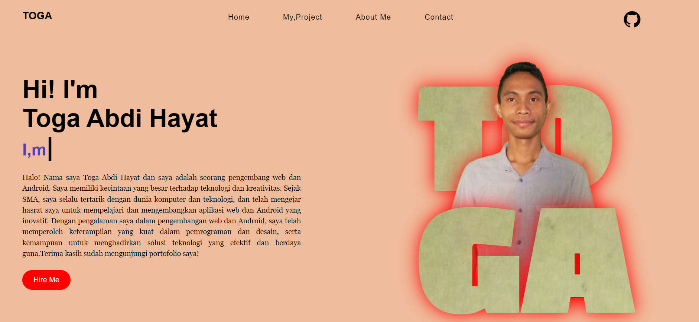

TO
GA
Hi! I'm
Toga Abdi Hayat
Halo! Nama saya Toga Abdi Hayat dan saya adalah seorang pengembang web dan Android. Saya memiliki kecintaan yang besar terhadap teknologi dan kreativitas. Sejak SMA, saya selalu tertarik dengan dunia komputer dan teknologi, dan telah mengejar hasrat saya untuk mempelajari dan mengembangkan aplikasi web dan Android yang inovatif. Dengan pengalaman saya dalam pengembangan web dan Android, saya telah memperoleh keterampilan yang kuat dalam pemrograman dan desain, serta kemampuan untuk menghadirkan solusi teknologi yang efektif dan berdaya guna.Terima kasih sudah mengunjungi portofolio saya!
Technical Skills
PHP
Kotlin
Laravel
CSS
HTML:5
My Project

Books Shelf
Website sederhana yang menggunakan LocalStorage untuk menyimpan data buku. Pengguna dapat menambahkan, menghapus, dan mencari buku dalam koleksi mereka tanpa memerlukan database eksternal, memastikan data tersimpan secara lokal di perangkat untuk akses cepat dan mudah.

Kalkulator
Website sederhana yang memungkinkan pengguna melakukan perhitungan matematis dasar. Menggunakan HTML, CSS, dan JavaScript, aplikasi ini menawarkan antarmuka yang intuitif dan responsif, memungkinkan pengguna untuk melakukan operasi seperti penjumlahan, pengurangan, perkalian, dan pembagian dengan mudah dan cepat.

Sistem Informasi Instansi BPMP Sultra
Proyek ini menciptakan platform web yang menyediakan akses publik untuk informasi BPMP Sultra dan antarmuka admin untuk manajemen konten. Dengan desain yang terintegrasi, sistem ini memungkinkan penggunaan yang efisien oleh masyarakat dan staf internal

Website Portfolio
Sebuah website portofolio pribadi yang menampilkan keterampilan, proyek, dan pengalaman saya dalam pengembangan web. Dibuat dengan HTML, CSS, dan JavaScript, situs ini memiliki desain responsif dan user-friendly.